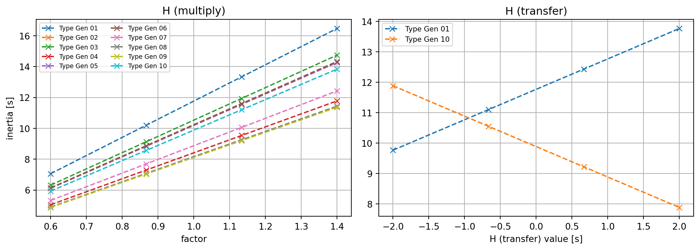
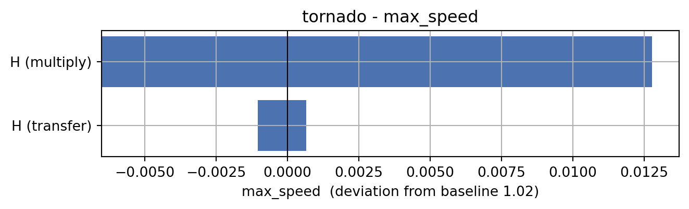
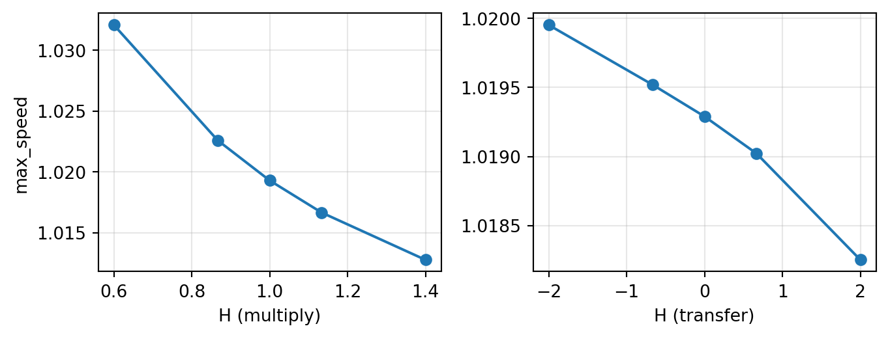

A parameter study changes one or more inputs of a simulation model, runs the model, and records a metric - repeated for many input values - so you can see how sensitive a result is to each input. This tutorial uses the parstudy package (pip install powfacpy[parstudy]) to do the bookkeeping: you declare each quantity to vary as a ModelParameter, provide one evaluate(values) function that runs your model for a given set of values and returns the results, and a Study takes care of which combinations to visit (a sweep strategy), running them, restoring the model afterwards, and collecting everything into a results table with plots and statistics on top.
powfacpy.applications.parameter_studies adds two things that are specific to PowerFactory:
pf_parameter(...) - a convenience for sweeping one attribute across a list of PF objects in lockstep (a linear range, "set"/"multiply"/"add" against each object’s current value);
apply_gradient(...) - spreads a value unevenly across a list of objects instead (e.g. varying generator inertias across a fleet while keeping the fleet average fixed) - something a generic parameter-study library has no way to know how to do for you.
Everything else used below - ModelParameter, Study, StudyResults - is plain parstudy functionality.
1.1 Relation to the Study Cases tutorial
The Study Cases tutorial solves a related but different problem. StudyCases materializes every parameter combination as a persistent study case (with a matching operation scenario/variation) in the PF project database - well suited to a moderate, fixed set of combinations you want to keep around, browse, activate and rerun manually in the PowerFactory GUI, or compare via PF’s own plot pages. parstudy, used here, instead mutates the model in place for each run, evaluates it, and restores it afterwards - nothing is written to the database permanently. That makes it the better fit for larger or more exploratory sweeps (a full grid, latin_hypercube(n), sobol(n) sampling) where you mainly want the resulting numbers - plus the sweep strategies, statistics (correlation, regression, sobol_indices) and plots parstudy builds on top - rather than a browsable set of PF cases. The two are not mutually exclusive: an evaluate function can just as well activate one of StudyCases’s pre-built cases instead of mutating attributes directly, combining persistent, inspectable cases with parstudy’s sampling and analysis.
2 Setup
First, we activate the PowerFactory project, i.e. the IEEE 39 bus system.
# If you use IPython/Jupyter:import sysimport jsonwithopen(r"..\..\settings_local.json") as settings_file: SETTINGS = json.load(settings_file)sys.path.append( SETTINGS["local path to PowerFactory application"] # e.g. r"C:\Program Files\DIgSILENT\PowerFactory 2025 SP5\Python\3.13")# Get the PF appimport powerfactoryimport powfacpyapp = powerfactory.GetApplication()app.Show()app.ActivateProject(r"powfacpy\39_bus_new_england_copy_to_run_tests") # You may change the project path.
0
We create a copy of the study case that simulates a fault at bus 16 and clear all result variables.
from powfacpy.base.active_project import ActiveProjectact_prj = ActiveProject(app)act_prj.create_study_case("Parameter Study", r"Study Cases\2.1 Simulation Fault Bus 16 Stable", parent_folder=r"Study Cases\powfacpy")act_prj.clear_results_variables()
We get all synchronous machines and their types, and monitor their rotor speed.
from powfacpy.result_variables import ResVarRMS_BAL = ResVar.RMS_Baltry: app.Hide() synchronous_machines = act_prj.get_calc_relevant_obj("ElmSym") synchronous_machines.sort(key=lambda x: x.loc_name) synchronous_machine_types = [sm.typ_id for sm in synchronous_machines] act_prj.add_results_variable(synchronous_machines, RMS_BAL.ElmSym.s_speed.value)finally: app.Show()synchronous_machines
We define two parstudy.ModelParameters, both affecting the inertia constant (tag) of the synchronous machine types, but in different ways: one scales every machine uniformly, the other redistributes inertia between just two of them.
3.1 A multiplicative sweep
pf_parameter builds a ModelParameter that scales every machine type’s inertia by the same factor, from 0.6 to 1.4 over four steps - a shared range applied to objects that do not all start at the same value.
pf_parameter (and ModelParameter’s own mode="set"/"multiply"/"add") always write the same value to every object in affects. Sometimes that is not what you want - here, we transfer inertia from one specific machine type to another instead: as the parameter increases, synchronous_machine_types[0] gains inertia and synchronous_machine_types[-1] loses the same amount, keeping their combined total fixed. There is no generic ModelParameter option for that, so we declare it with auto_apply=False (its affects still drives the snapshot / restore-on-exit and the audit trail) and write the two lines of custom logic ourselves, directly in evaluate below.
(powfacpy.applications.parameter_studies also ships apply_gradient, a ready-made version of this same idea that spreads a value unevenly across an entire fleet of objects rather than just two named ones - see its docstring. We write the two-machine version by hand here since it is simpler to follow.)
A quick preview - without touching PowerFactory at all - of what each parameter would write, across its four steps: every machine type for H (multiply), just machine_a/machine_b for H (transfer):
import matplotlib.pyplot as pltplt.rcParams.update({"axes.grid": True})names = [t.loc_name for t in synchronous_machine_types]baselines = [t.GetAttribute("tag") for t in synchronous_machine_types]fig, axes = plt.subplots(1, 2, figsize=(11, 4))axes[0].set_title("H (multiply)")for name, base inzip(names, baselines): axes[0].plot(h_mult.values, [base * f for f in h_mult.values], marker="x", ls="--", label=name)axes[0].set_xlabel("factor"); axes[0].set_ylabel("inertia [s]")axes[0].legend(fontsize=7, ncol=2)axes[1].set_title("H (transfer)")base_a, base_b = h_transfer_baselineaxes[1].plot(h_transfer.values, [base_a + v for v in h_transfer.values], marker="x", ls="--", label=machine_a.loc_name)axes[1].plot(h_transfer.values, [base_b - v for v in h_transfer.values], marker="x", ls="--", label=machine_b.loc_name)axes[1].set_xlabel("H (transfer) value [s]")axes[1].legend(fontsize=8)fig.tight_layout()

4 Running the Study
Study needs one evaluate function, called once per run.
Input:evaluate(values) (or evaluate(values, context)) receives values, a dict mapping every parameter’s name to the value it takes in this run - not only the one currently being swept. For a parameter that is not varied in a given run, values holds its default (the mean of its values unless you pass default=... explicitly). The optional second argument context is a parstudy.RunContext whose context.varied names the parameter being swept in this run, or is None for the baseline run.
Output:evaluate must return either a mapping of scalar results (e.g. {"max_speed": 1.02}), or a (mapping, raw) tuple. mapping becomes one row of the results block of the study’s table; raw is the full artefact of the run (here, the whole simulation DataFrame) - kept in memory (or written to disk if Study(..., raw_store=...) is set) and retrievable later via StudyResults.raw(run).
By default (strategy="one_at_a_time", used below since we don’t pass strategy=), the plan is: one baseline run with every parameter at its default, then, for each parameter in turn, one run per value in its values while every other parameter stays at its default.
h_mult auto-applies itself (its affects and mode="multiply" are enough). h_transfer needs the explicit two-line transfer - but only in the run where it is actually being swept: values always contains an entry for "H (transfer)" (its default, even while h_mult is being swept), so checking "H (transfer)" in values would apply the transfer on every run - even the ones sweeping h_mult - overwriting h_mult’s scaling on machine_a/machine_b with the transfer’s own (default, no-op) values instead. context.varied tells us which parameter this particular run is actually varying, so that is what we check instead. This is also precisely what lets both parameters share a single Study below, rather than needing one Study each.
Both parameters can therefore share a single Study. Study.run() sweeps them (baseline, then h_mult’s four values, then h_transfer’s four values), applies/restores the model for us, and returns one StudyResults.
[1/9] sample
[2/9] H (multiply)=0.6
[3/9] H (multiply)=0.8666666666666667
[4/9] H (multiply)=1.1333333333333333
[5/9] H (multiply)=1.4
[6/9] H (transfer)=-2.0
[7/9] H (transfer)=-0.6666666666666667
[8/9] H (transfer)=0.6666666666666665
[9/9] H (transfer)=2.0
4.1 The results table
One row per run - the shared baseline, then four rows sweeping H (multiply), then four sweeping H (transfer) - with parameters and results blocks. The parameters block shows every parameter’s value on every row, with default filled in for whichever one isn’t being swept that run. The baseline row (H (multiply)=1.0, H (transfer)=0.0) is not a special “zero” case - it is simply the “no change” point of each range:
results.evaluations.round(4)
parameters
results
H (multiply)
H (transfer)
max_speed
run
0
1.0000
-0.0000
1.0193
1
0.6000
-0.0000
1.0321
2
0.8667
-0.0000
1.0226
3
1.1333
-0.0000
1.0167
4
1.4000
-0.0000
1.0128
5
1.0000
-2.0000
1.0200
6
1.0000
-0.6667
1.0195
7
1.0000
0.6667
1.0190
8
1.0000
2.0000
1.0183
StudyResults.raw(run) gives back the full simulation DataFrame of any run, and StudyResults.varied names which parameter (if any) was swept for each row. StudyResults.tornado(metric) shows, for every swept parameter, the swing between its smallest and largest step relative to the baseline - with two parameters in one Study, one call now compares both:
results.tornado("max_speed");

H (multiply)’s bar is not centered on the baseline, even though its range (0.6 to 1.4) is centered on 1.0 - and that is not a bug: the bar shows the actual max_speed at the parameter’s lowest and highest swept value, each minus the baseline, from the results table above. Dropping to H (multiply)=0.6 raises max_speed by about +0.076 (1.1615 vs. the 1.0859 baseline); raising it to H (multiply)=1.4 only lowers max_speed by about -0.025 - less than a third as much, in the opposite direction. That asymmetry is real: max_speed is not linear in H, since inertia’s stabilizing effect has diminishing returns as it grows, so equal-sized steps in H do not produce equal-and-opposite steps in the response. H (transfer)’s bar shows a milder version of the same thing. A symmetric input range earns you a directly comparable pair of points to read off - not a symmetric output swing, which would only happen if the underlying relationship were linear (it rarely is, this close to a real disturbance’s nonlinear dynamics).
4.2 Plotting each parameter’s sweep
StudyResults.plot(metric) puts every swept parameter in its own panel, x-axis at the parameter’s actual value (not the run number), sorted and including the shared baseline point at each parameter’s own default. H (multiply)‘s panel has by far the larger vertical spread: scaling every machine’s inertia together moves the fleet’s total inertia and therefore the frequency response directly, whereas H (transfer) only moves two machines’ inertias in opposite directions, leaving the fleet total unchanged - so its swing in max_speed here is only about a quarter of H (multiply)’s:
results.plot("max_speed");

5 Advanced Parameter Patterns
Two further patterns are worth knowing, shown here without running them (they need model pieces this tutorial’s test system does not have).
Post-processing-only parameters do not change the simulation at all - a typical example is the filter/averaging time of a RoCoF measurement. Mark them with affects_simulation=False (a hint parstudy just stores for you) and, in evaluate, use context.varied (as above) to reuse the previous run’s raw simulation instead of resimulating:
Parameters with no plain PF attribute (a value written into a DSL array, say) simply omit affects - there is nothing to snapshot or auto-apply - and evaluate does the writing itself:
rocof_param = ModelParameter("External grid (RoCoF)", linspace(-3.0, -0.5, 4)) # no 'affects'def evaluate(values): set_external_rocof(values["External grid (RoCoF)"]) # writes a DSL array - your own code ...
Since there is no affects, remember to reset it yourself afterwards if that matters (e.g. in a finally block around study.run()).
6 Where To Go From Here
Because results is a plain parstudy.StudyResults, everything in parstudy’s own tutorial applies unchanged: switching to a full grid, a latin_hypercube(n) or sobol(n) sample is one strategy= argument to Study; run(parallel=N) spreads runs over worker processes; raw_store=... writes each run’s raw simulation to disk and enables run(resume=True); correlation() / regression() / sobol_indices() quantify what tornado/plot show visually; study.export_design(path) / parstudy.from_design(path) save and replay a run matrix; and parstudy.diff(before, after) compares two studies run on the same design - handy for “I changed the model - what did it do to my results?”.